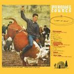
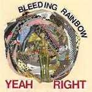
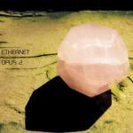
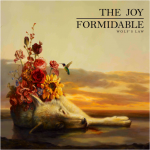
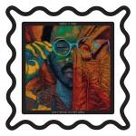

Music Reviews
-

Draw Me Stories Cocoon Machina
Draw Me Stories formally announce their arrival with a new string to the bow of indie music, and impress with this expansive effort.
Carl Purvis reviews... -

Local Natives Hummingbird
After a three year absence, the Los Angeles band further expands the scope of their debut, Gorilla Manor, while still erring on the side of earnestness.
Juan Edgardo Rodríguez reviews... -
Radar Brothers Eight
Radar Brothers' newest album, simply titled Eight, is an easy-going affair that combines some strong psychedelic vibes with a few melodic wrinkles to keep things fresh.
John Grimley reviews...
-

Parquet Courts Light Up Gold
Though it initially appears to be true slacker rock at its finest, the debut album from Parquet Courts shows that they only make it look effortless by focusing less on originality and more on simply writing great, catchy songs.
Peter Quinton can just barely get off the couch in order to craft this whole-hearted review... -

Bleeding Rainbow Yeah Right
After being struck down by LaVar Burton, Reading Rainbow dies and rises again as Bleeding Rainbow with disapointing results.
Walter Somerville still hasn't found a pot of gold... -
Widowspeak Almanac
The Brooklyn duo provides a good follow-up that helps cement their holding in the new age of dreamy folk rock.
Carlos Villarreal reviews... -

Ethernet Opus 2
Portland ambient composer Tim Gray's music is the result of his academic explorations of the healing properties of sound. Does Opus 2 live up to such lofty ambitions?
Stephen Wragg puts on headphones and meditates... -

The Joy Formidable Wolf's Law
The Welsh power-trio's second album is the same fuzzed-out bombast that their debut showcased, and despite a few missteps, willpower wins out in the end.
Forrest Cardamenis studies... -
This Town Needs Guns 13.0.0.0.0
13.0.0.0.0, the new album from UK math rock band, This Town Needs Guns, offers listeners very pleasant dexterity exercises in light of the Mayans’ miscalculation.
Sean Caldwell turned 36 on December 21st... -

Toro y Moi Anything in Return
The third album from Toro y Moi explores a new variety of sounds, textures, and influences. Then again, based on past albums, isn't that what's come to be expected?
David Hogg reviews...